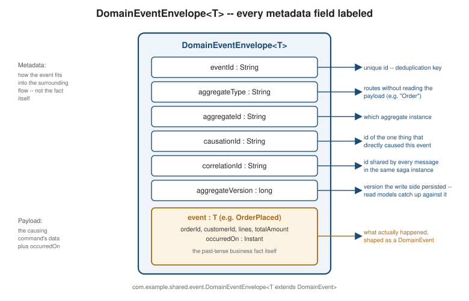

Domain Events
|
This content was generated with the assistance of AI and should be verified against the official documentation before being relied on in production. |
Aggregates ends with a corollary this page picks up directly:
consistency between aggregates can never be transactional, only eventual, and a domain event is the thing
that carries a fact from the aggregate where it happened to every other aggregate, bounded context, or read model
that needs to react to it. This page covers what a domain event actually is, how it is shaped and named, how the
aggregate that raises one hands it to the rest of the system, and how it is consumed — shown with the same Java
21 / Spring Boot 4.1.x / Spring Data JPA / Spring Modulith 2.x / Spring for Apache Kafka 4.1.x baseline as the
rest of this section, and reusing the exact Order aggregate and event types
Entities and Aggregates
already established.
What a domain event is
A domain event is a record of something that already happened inside the domain — a past-tense fact, not an
instruction. OrderPlaced is a domain event; PlaceOrder is not, because PlaceOrder is phrased as a request
that has not happened yet. That distinction is not a naming nicety, it is the whole difference between a command
and an event:
-
A command (
PlaceOrderCommand,ApproveOrderCommand) is an intention: "please do this." It names one specific handler, is sent to exactly that handler, and can be rejected —Order.place(command)can throw, and a saga command handler can reply with a failure such asInventoryReservationFailed(Sagas). -
A domain event (
OrderPlaced,OrderApproved) is a fact: "this already happened." It names nothing about who consumes it, can be published to any number of subscribers the publisher never has to know about, and cannot be rejected — by the timeOrderPlacedexists, the order has already been placed; a listener that disagrees can only react (e.g. by starting a compensation), never undo the fact itself. Vernon’s DDD Destilado ch. 6 makes this the defining property of the pattern: an event is immutable and irrevocable the instant it is raised, which is exactly whyOrder.approve()returningList.of(new OrderApproved(…))happens only afterstatushas already flipped toAPPROVEDinside the same method, never before.
Event naming follows directly from "already happened": a past-participle verb applied to the aggregate the
event is about — OrderPlaced, OrderApproved, OrderRejected, OrderCancelled, never PlaceOrder,
ApproveOrder, or a present-tense OrderApproving. A reader should be able to tell, from the type name alone
and with no further context, that the event describes something already committed.
An event’s properties fall into two groups. The first is the data of the command that caused it — enough
for a subscriber to act without a follow-up query, e.g. OrderPlaced carries the customerId, lines, and
totalAmount that were true the moment the order was placed. The second is metadata that is not about the
business fact itself but about how the event fits into the surrounding flow: a unique event id (for
deduplication), a timestamp (occurredOn), the aggregate’s type and id (so a generic handler can route without
inspecting the payload), a causation id (the id of the command or event that directly caused this one), and a
correlation id (an id shared by every event and command belonging to the same end-to-end business operation,
such as orderId across the whole Place Order Saga). The canonical DomainEventEnvelope below is exactly this
second group wrapped around the first.
Minimal vs. enriched events, and time-based events
Richardson’s Microservices Patterns 5.3.3 frames event payload design as a stability trade-off between two ends of a spectrum:
-
A minimal event carries little more than the aggregate id and the fact that something changed —
OrderApproved(orderId, occurredOn)is already minimal: a subscriber that needs the order’s current lines or total has to query the Order context separately to get them. Minimal events are cheap to define and rarely need a breaking change, but they couple every consumer to an extra network round trip and to the publisher’s availability at the moment the consumer processes the event. -
An enriched event carries enough data for consumers to act without that follow-up query —
OrderPlaced(orderId, customerId, lines, totalAmount, occurredOn)is enriched this way on purpose, since Inventory and Payment both need the line items and the total to do their own work, and querying the Order context synchronously from inside an asynchronous event handler would reintroduce exactly the kind of cross-context coupling Strategic Design draws bounded contexts to avoid. Enrichment’s cost is stability: every field added to a published event is now part of a contract other services depend on, and removing or repurposing one later is a breaking change across every consumer, not just a local refactor.
The running example leans enriched for OrderPlaced specifically because its known consumers (Inventory,
Payment) need the payload to act, and stays minimal for OrderApproved/OrderRejected/OrderCancelled, whose
only known consumers so far need just the id and the outcome. There is no universally correct point on the
spectrum — the right amount of enrichment is however much the event’s actual known consumers need, reviewed
again each time a new consumer’s requirements are known.
Not every event is caused by a command at all. A time-based event — a bid deadline expiring, a payment
authorization hold expiring, a shipment’s promised delivery date passing — is raised by the passing of time
itself, detected by a scheduler or a timer, rather than by any actor’s request. Vernon’s DDD Destilado ch. 6
treats this as a fact like any other: nobody can "reject" a deadline expiring, which is exactly what makes it an
event rather than a command in the first place, even though no PlaceOrderCommand-shaped request ever triggered
it. A PaymentAuthorizationExpired event raised by a @Scheduled sweep over authorizations past their hold
window would be exactly this shape in the running domain.
The envelope
Every published domain event travels wrapped in the canonical DomainEventEnvelope<T>
(com.example.shared.event) shared by every page of this section, with every metadata field from the section
above accounted for:

eventId is what an idempotent consumer keys its deduplication table on (see below); aggregateType/
aggregateId let a generic outbox relay or a generic dead-letter handler route or log a message without
deserializing its payload; aggregateVersion is the version the publishing service’s repository persisted
together with this event, which is what lets a read model say precisely how far behind the write model it is
(CQRS builds its replication-lag check on it); causationId and correlationId are what let a trace of "why did this happen"
be reconstructed after the fact — causationId answers "what one thing directly caused this," while
correlationId answers "what whole business operation does this belong to," and the two coincide only for the
very first message in a chain.
How the aggregate hands events to the application service
There are two structurally different ways for an aggregate to hand its raised events to whatever publishes them, and this section shows both, since the choice shapes how framework-free the domain layer stays.
(a) Return the events — the style this section’s canonical code uses throughout. Every state-changing method
on Order returns the List<DomainEvent> it just raised (approve(), reject(reason), cancel()), and the
factory returns them alongside the newly created aggregate via OrderCreation
(Entities). PlaceOrderService
(Structuring the Code) then publishes exactly the
events the method call handed back, in the same method that saved the aggregate. Order never imports an event
bus, an ApplicationEventPublisher, or any publishing interface at all — it has no idea events get published
anywhere, which is exactly the "framework-free domain layer" split Structuring
the Code draws between the domain layer and everything around it. This is the style the rest of this section
uses consistently, for that reason.
(b) Accumulate in the root — Spring Data’s AbstractAggregateRoot. Spring Data offers a built-in
alternative: the aggregate root extends AbstractAggregateRoot<T>, calls registerEvent(event) internally every
time it raises one instead of returning it, and Spring Data’s repository save(…) call automatically drains
the accumulated events via a package-private @DomainEvents-annotated method and publishes each one through
ApplicationEventPublisher, then calls an @AfterDomainEventPublication-annotated method to clear them. The
appeal is less code at the call site — orderRepository.save(order) publishes events as a side effect, with no
separate domainEventPublisher.publish(…) call needed — but it costs the domain layer its independence from Spring Data: Order
would now extend a Spring Data type and could not be constructed, tested, or reasoned about without that
dependency present. The contrast sketch in the code section below shows exactly how much of `Order’s shape would
have to change to adopt it.
This section’s canonical code sticks with style (a) for one reason: keeping
Order framework-free is worth more here than the one explicit domainEventPublisher.publish(…) call it saves, since it
lets `Order’s unit tests (Entities's equality test, for example)
construct and exercise the aggregate with zero Spring Data on the classpath at all.
In-process listeners vs. out-of-process publication
Once PlaceOrderService hands its events to DomainEventPublisher.publish(…), "publish" can
mean two structurally different things, and a project can use either or both for the same event:
-
In-process, same-JVM listeners react to the event without it ever leaving the service. Spring’s
@TransactionalEventListeneris the standard mechanism: it subscribes to the exact sameApplicationEventPublisher.publishEvent(…)call the outbound port makes, but only invokes the listener once the surrounding transaction has actually committed (TransactionPhase.AFTER_COMMITby default) — so a listener never reacts to anOrderPlacedwhose transaction later rolled back. This is cheap, synchronous with respect to the JVM (though asynchronous with respect to the transaction that raised the event), and needs no broker at all, which makes it the right tool for same-service side effects such as sending a confirmation email or updating an in-process cache. -
Out-of-process publication puts the event on a broker topic (Kafka, RabbitMQ) so that other services — potentially ones the publisher was never deployed alongside — can subscribe independently. Transactional Outbox covers how that publication is made reliable (the same local transaction that saves
Orderalso writes the outbox row a separate relay process later forwards to the broker), and Spring Boot: Apache Kafka and Kafka Connect cover the Kafka mechanics themselves; this page only needs the distinction, not the transport detail.
Spring Modulith’s @ApplicationModuleListener sits between the two: it is still an in-process, same-JVM
annotation, but scoped to module boundaries rather than being open to every bean in the application context, and
it is backed by Spring Modulith’s own event publication registry so a listener that fails or a process that
crashes mid-delivery does not silently lose the event — Spring
Modulith’s application-events and event-externalization support already documents this mechanism in depth and is
linked here rather than re-taught; the choreography-style InventoryEventListener on
Sagas is exactly this annotation in use, reacting to OrderPlaced
across the Inventory/Order module boundary.
Consuming events
A consumer receiving a domain event — whether via @TransactionalEventListener, @ApplicationModuleListener,
or a Kafka @KafkaListener reading an outbox-relayed message — has three concerns to get right regardless of
which mechanism delivered it:
-
Dispatch to handlers. A single inbound channel (one Kafka topic, one listener method) may carry more than one event type; the handler typically pattern-matches on the envelope’s
eventpayload (or onaggregateType/an explicit event-type header) to route to the specific handling logic forOrderPlacedversusOrderApproved, rather than one handler method trying to branch on every possible shape inline. -
Idempotent handling, or processed-message tracking. At-least-once delivery — the norm for both the transactional outbox’s polling relay and any Kafka consumer that acknowledges after processing — means the same event can arrive more than once. A handler is either naturally idempotent (an
UPSERTkeyed on the aggregate id always converges to the same row regardless of how many times it runs) or needs an explicit processed-message table: before applying an event, check whether itseventIdis already recorded as processed, skip if so, and record it as processed in the same local transaction as the side effect, so a redelivered event after a crash between "applied" and "acknowledged" is a safe no-op rather than a double effect. The code below shows exactly this second shape against aprocessed_eventstable. -
Ordering and causality per aggregate key. Two events about the same aggregate (
OrderPlacedthenOrderApprovedfor the sameorderId) must be processed in the order they were raised, or a consumer’s view of that aggregate can end up representing a state that never actually existed (approved, then un-approved back to placed). Events about different aggregates carry no such requirement between each other. Kafka’s partition-by-key delivers exactly this guarantee when a topic is partitioned byaggregateId: all events for one order land on the same partition and are delivered to that partition’s consumer in the order they were produced, while unrelated orders' events may interleave across partitions freely.
A publishing bounded context is also, quite often, one of its own event’s subscribers: PlaceOrderService
publishes OrderPlaced, but the Order context itself may also need to react to it — to update its own
read-optimized projection, for instance, rather than only serving reads from the write-side Order row. This is
exactly the shape Aggregates gestures at when it says eventual
consistency between aggregates is implemented with events, generalized to the case where the "other side" is
the same context reacting to its own fact; Listen to
Yourself covers the specific, more deliberate pattern of a context relying on subscribing to its own published
event as the mechanism that updates its own state, rather than updating that state directly and publishing
merely as an afterthought.
Finally, events are versioned, not mutated: once OrderPlaced is published anywhere outside the process that
raised it, an existing field’s meaning can never change and a field can never be removed out from under an
existing consumer, because there is no way to know which consumers have already deployed code that reads it.
When a genuinely new fact needs representing, the answer is a new event type (or an explicitly versioned variant,
OrderPlacedV2), never a repurposed field on the old one — Event Sourcing's "evolving events" section covers the deeper
treatment this needs once events are not just transient messages but the durable source of truth for an
aggregate’s entire history.
Code: the canonical event types, both hand-off styles, and consumption
The marker interface every domain event implements, and the canonical OrderPlaced event, are unchanged from
Aggregates' running domain model:
package com.example.shared.event;
import java.time.Instant;
public interface DomainEvent {
Instant occurredOn();
}package com.example.order.domain.event;
import com.example.order.domain.OrderId;
import com.example.order.domain.OrderLine;
import com.example.shared.CustomerId;
import com.example.shared.Money;
import com.example.shared.event.DomainEvent;
import java.time.Instant;
import java.util.List;
public record OrderPlaced(OrderId orderId, CustomerId customerId, List<OrderLine> lines,
Money totalAmount, Instant occurredOn) implements DomainEvent {
}The envelope, generic over any DomainEvent payload:
package com.example.shared.event;
public record DomainEventEnvelope<T extends DomainEvent>(
String eventId, String aggregateType, String aggregateId, long aggregateVersion,
String causationId, String correlationId, T event) {
}Style (a), the canonical return-value style — unchanged from
Entities: Order.place(…) returns the new aggregate and the
events it raised together, with no framework dependency anywhere in Order itself:
public static OrderCreation place(PlaceOrderCommand command) {
OrderId id = OrderId.generate();
Order order = new Order(id, command.customerId(), command.lines(), OrderStatus.APPROVAL_PENDING);
OrderPlaced event = new OrderPlaced(id, command.customerId(), List.copyOf(order.lines),
order.totalAmount(), Instant.now());
return new OrderCreation(order, List.of(event));
}Style (b), for contrast only — the same factory and approve() method reshaped onto
AbstractAggregateRoot<T>, never reused by any other page in this section: Order would extend a Spring Data
type, registerEvent(…) replaces the returned list, and orderRepository.save(order) alone would be what
triggers publication:
// Contrast only -- not the style this section's canonical code uses; kept out of com.example.order.domain.
import org.springframework.data.domain.AbstractAggregateRoot;
public class OrderAggregateRootStyle extends AbstractAggregateRoot<OrderAggregateRootStyle> {
private final OrderId id;
private OrderStatus status;
public static OrderAggregateRootStyle place(PlaceOrderCommand command) {
OrderAggregateRootStyle order = new OrderAggregateRootStyle(OrderId.generate(), command);
order.registerEvent(new OrderPlaced(order.id, command.customerId(), command.lines(),
order.totalAmount(), Instant.now()));
return order;
}
public void approve() {
requireStatus(OrderStatus.APPROVAL_PENDING);
status = OrderStatus.APPROVED;
registerEvent(new OrderApproved(id, Instant.now())); // accumulated, not returned
}
// Spring Data drains registerEvent(...)'s backlog via the inherited @DomainEvents method
// and clears it via the inherited @AfterDomainEventPublication method on every save(...).
}An in-process listener reacting after the publishing transaction has actually committed:
package com.example.order.api;
import com.example.order.domain.event.OrderPlaced;
import org.springframework.stereotype.Component;
import org.springframework.transaction.event.TransactionPhase;
import org.springframework.transaction.event.TransactionalEventListener;
@Component
class OrderPlacedNotifier {
@TransactionalEventListener(phase = TransactionPhase.AFTER_COMMIT)
void on(OrderPlaced event) {
// e.g. enqueue a confirmation email -- never runs if the placing transaction rolls back
}
}Derived from Spring’s transaction-bound event listeners — see Spring Framework reference — Transaction-bound events.
An idempotent event handler backed by a processed_events table, applying an OrderPlaced envelope delivered
from the outbox relay at least once:
package com.example.order.api;
import com.example.shared.event.DomainEventEnvelope;
import com.example.order.domain.event.OrderPlaced;
import org.springframework.kafka.annotation.KafkaListener;
import org.springframework.stereotype.Component;
import org.springframework.transaction.annotation.Transactional;
@Component
class OrderPlacedProjectionHandler {
private final ProcessedEventRepository processedEvents;
private final OrderHistoryRepository orderHistory;
OrderPlacedProjectionHandler(ProcessedEventRepository processedEvents, OrderHistoryRepository orderHistory) {
this.processedEvents = processedEvents;
this.orderHistory = orderHistory;
}
@KafkaListener(topics = "order-events")
@Transactional
public void on(DomainEventEnvelope<OrderPlaced> envelope) {
if (processedEvents.existsById(envelope.eventId())) {
return; // redelivered -- already applied, safe no-op
}
orderHistory.upsertFromPlaced(envelope.event(), envelope.aggregateVersion());
processedEvents.save(new ProcessedEvent(envelope.eventId(), envelope.aggregateId()));
}
}Derived from Spring for Apache Kafka’s listener model — see Spring for Apache Kafka reference — @KafkaListener annotation.
ProcessedEvent is deliberately minimal — an eventId primary key plus enough context to audit — INSERT … ON CONFLICT DO NOTHING style dedup semantics, checked explicitly here rather than relied on
implicitly, are the same idea Transactional Outbox's
consumer side uses; this page shows the check as a plain existsById guard for readability.
Mermaid: from command to published event
The sequence from an inbound PlaceOrderCommand to the event landing on the outbox, matching style (a)'s
return-value hand-off exactly: